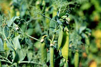

What are Dry Peas?
The pea (Psium sativum L.)was among the first crops cultivated by man and was first domesticated in the Near East over 8000 years ago. It is a cool season crop and is widely grown in the cooler temperate zones of the world. It is now the most important specialty crop grown in Saskatchewan.
The dry pea is especially valued for its protein contribution to human and animal diets. Because the pea plant fixes nitrogen in the soil, it is also a valuable addition to crop rotations.
Field pea and garden pea are closely related. Domestication of the garden pea followed that of field pea. Both dry green and dry yellow pea varieties are grown. The dry green pea is frown mainly in the USA; the dry yellow is grown mainly in Canada. The chlorophyll in the dry green pea seeds is readily oxidized in the presence of heat and moisture during ripening. This has the effect of "bleaching" on the seed which results in light green dry pea seed which is not acceptable in the food market. The frequent occurrence of wet weather before or during dry pea harvest discourages production of dry green pea in Canada.
Why are they produced?
The dry pea is used for:
- food - whole or split in stews or soups
- food - hulls for high fibre breads
- food - pea protein; human food and pea protein isolates
- seed - about 10% of all harvest (large seeded crop)
- feed - feed peas; high protein poultry, swine and cattle feed
- industry - pea starch (adhesives, purification of potash and carbonless paper)
Only a small part of Canada's dry pea crop is used domestically for human food such as pea soup. The balance is exported or used for livestock feed or seed. Some producers find that the use of feed pea alone and in combination with canola meal provides and excellent protein source for grower-finisher hog rations.
Where are peas produced?
China, Russia, France, Ukraine, Australia and Canada are all producers of dry pea. In 1996, Canada (about 13% of world production) outproduced China (10%) and Russia (10.5%) to become the world's third largest producer after France (22%) and the Ukraine (almost 15%). Northern European countries are the world's largest importers and Canada's largest export market is western Europe with about 60% of Canada's exports. Spain, Belgium and the Netherlands are the largest purchasers. India, Japan, Mexico, Columbia and Venezuela are other significant customers.
Canada is the only major pea producing country in the world where pea yields almost equal wheat yields on average and virtually all of the dry pea grown in Canada is grown in the prairie provinces. Alberta and Saskatchewan have increased production rapidly in recent years while Manitoba has fallen from about 30% of the prairie total to about 10%. Saskatchewan now grows over 60% of prairie acres and production and dry pea is now the largest specialty crop in Saskatchewan by acreage, production and value. It has surpassed lentil and mustard in acreage, production and value.
How much is produced?
Saskatchewan produces about 65% of the total production of dry pea in Canada. Dry pea was grown on over 950,000 acres in Saskatchewan in 1996, a drop from the record area of 1,350,000 ac in 1995.
What does it look like?
Pea is an annual plant that has round, trailing, twining stems. There are two types of cultivars; a standard type with normal leaves; and semi-leafless type with the leaflets reduced to tendrils. Peas have single stems , or branch profusely. Branching may be from the lower stem, or from nodes immediately below the node of the first flower. Peas have a taproot system. Pea flowers are normally white and last for 10 to 21 days. The plant self-pollinates and after fertilization, pods form. These pods contain various numbers of seeds, depending on the variety of pea.
The plant takes 90 to 110 days to mature. A mature plant is identifiable by the lowermost pods turning a light yellow and the seeds within these pods rattle. The yield of a pea crop is most affected by how favorable the growing conditions are when the plant is flowering. It is during the flowering period that the plant can be damaged by the effects of frost, moisture levels and temperature stress.
Pea varieties registered for Western Canada fall into two types: yellow cotyledon or green cotyledon. A good yellow food pea has a large,
round and smooth seed. It has a uniform colour seed coat, with cooking characteristics equal or superior to the standard cooking variety.
A good green food pea is large, round and smooth with a uniformly green seed coat and cotyledons. Currently available green varieties yield approximately 2O% less than yellow varieties under similar growing conditions.
There are several varieties of pea that are adapted to conditions in Saskatchewan. The most popular of these varieties are:
-
Century - standard cooking variety; seeds are much larger than Trapper, and about the same yield and maturity.
- Trapper - Mainly used for feed; small-seeded variety. Trapper matures in 95 to 100 days. Trapper has the advantage of smaller seeds (reduced cost of establishment) and less vine growth (reduced problems with vines and foliage diseases) than Century.
Other varieties that have been developed in recent years are Victoria, Titan, Express, Radley. Pea types such as marrowfat, Alaskan, maple, and Austrian winter pea are grown for specialty confection, birdseed and forage markets. They are usually lower yielding and involve more production and price risk.
Some pea varieties have a semi-leafless growth habit. Their leaflets are converted to tendrils, The tendrils of adjacent plants intertwine to provide better support (standability) for the entire canopy.
The semi-leafless varieties are often better suited to areas of high moisture in part due to their shorter vine length and more open canopy.
How is it produced?
The dry pea is a cool season crop well-suited to many areas in the prairies. It is best adapted to the Black soil zone, but can be grown in parts of the Grey and Grey Black soil zones and along the northern edge of the Dark Brown soil zone. With a restricted root system, the pea cannot tolerate hot weather or drought stress during flowering. Poorly drained, cold soils should be avoided, as they favor the development of seedling diseases and root rots. The pea crop does not grow well on salt-affected soils. Well-drained, clay loam soils are ideal for pea production.
Some varieties of pea are similar in wheat in number of days to maturity. Peas can be seeded early in the spring as seedlings are resistant to spring frost.
Even if the frost is severe enough to kill the main shoot, the pea plant will initiate regrowth from buds at one of the nodes
at or below the soil surface, with a resulting delay in maturity. Early seeding, in general, results in higher yields, but protein content may be slightly lower.
Firm, weed-free seedbeds (peas do not compete well with weeds) on high-fertility soils are best for pea production. Dry pea should not be grown on the same field more than once every 4 to 5 years because of the danger of a rapid increase in soil-borne diseases.
The pea plant is capable of fixing part of its nitrogen requirement if properly inoculated with the pea strain of Rhizobium. The pea is often grown on stubble to take advantage of its ability to fix nitrogen. Crops following the pea crop in the rotation generally yield higher than crops grown after cereals, flax, or canola. For these reasons, pea production provides an agronomically sound way of extending and improving crop rotations.
Harvesting peas can be difficult and time consuming. The peas should be harvested when seed moisture level is around 16 to 20%. This helps to minimize splitting and cracking of the seed. The seeds are then dried for storage. Field pea plants may be swathed prior to full maturity (wind is a hazard), or straight-combined at full maturity. The best time to harvest is early morning or late afternoon to avoid pod shattering.
Summary
The pea
- is a cool season crop especially suited to the Black Soil Zone of Saskatchewan, but area of production has expanded outside this zone in recent years.
- cannot tolerate prolonged drought or heat.
- days to maturity are 92 -104 depending on variety.
- is most commonly affected Mycosphaerella blight (Ascochyta) is most common disease in Western Canada.
- fixes nitrogen which benefits both pea and succeeding crop.
- extends and expands crop rotations.
- is suited to conventional till, direct seeding or zero till production.
- is inoculated with appropriate rhizobia for nitrogen fixation.
- requires careful handling of seed during seeding, harvesting and storage to prevent cracking.
|